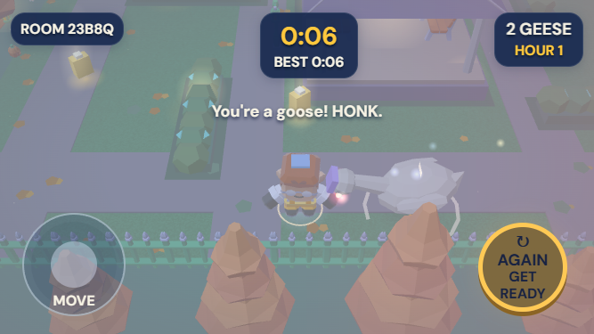
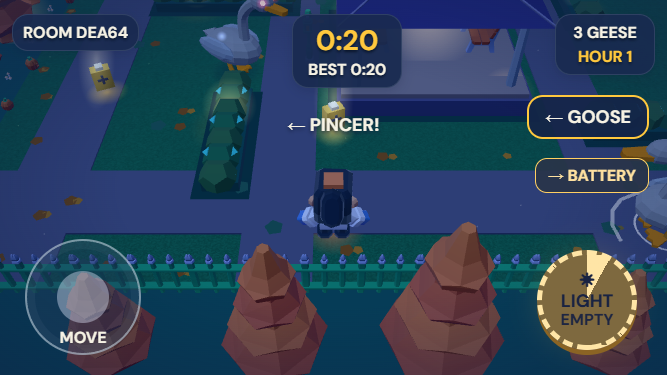

Original screenshots are unedited. The visual fixtures use the actual renderer with controlled motion, repeated lunge poses, and protected server seats; room IDs, character colours, animation times and framing vary. The solo comparison uses real input and server outcomes without a fixture. Click either original image to inspect it separately.

